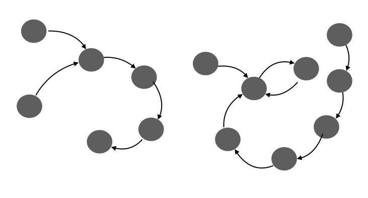

We have developed Mindscaper, a reflexive thinking tool which is designed to clarify mental models (our thought processes about how the world works) and contexturalize the formation of subconscious perceptions. You are invited to test out the first demo of Mindscaper and leave some constructive feedback.
I have read and agreed with the Terms and AgreementFirst of all, we would like to inform you up front that this thinking exercise might come across a little unusual. In fact, the tasks you will be taught here is not what we are used to do on a regular basis. But don't worry about it. In the next step, we will be demonstrating the techniques through a step-by-step tutorial. When you are ready, click the "next" button.
The following practice is an application of Water Logic, a dimension of thinking identified by Edward de Bono (psychologist and philosopher) in the 1990s. Water Logic clarifies the “flow” of our thinking processes from one thought to another, contineously...
For example, when I think about happiness… I think about love. Naturally, love reminds me of my family, and then I think about home and Chinese food...
As our thinking goes on and on, it might go back to where we have already been, and form a loop
and finally a large, complex structure will appear, like the following graphs…
These graphs have significant meanings and we are about to find out.
To sum up, this experience is entirely personal and reflexive. Everybody thinks differently, therefore generates unique thought patterns. Your graph captures the moment of thought processes unique to you, your mind, at this point in your life.
If you want to rewatch the tutorial, press the "rewatch" button. If you are ready to try out the software tool, press the "trial" button. Otherwise, press "next" to start the test.
Think deeply and seriously. Write down anything comes up to your mind with honesty (can be personal, philosophical, or emotional... the freedom is yours) and click the "submit" button or "enter" key to see the thought pops to the screen. Press "finish" when you feel like you are done and then press "next".
Be careful you cannot change or delete (for now)
Imagine your thinking is the river that flows in one direction... Choose one thought to start with, connect it to the next, to which it naturally flows or relates. Repeat this to let the river flow to the next thought, and the next thought until the river forms a loop. Then, we will start a new river and do this again.
Be careful you cannot change or delete (for now)... :)